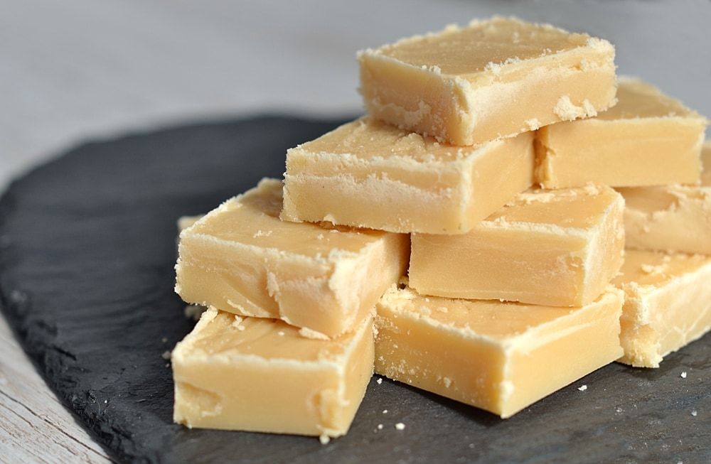

Scottish Tablet

Description
Scottish tablet is a traditional Scottish recipe that you
can find anywhere you go. However not as many people know how
to make it compared to how many enjoy it!
By following this recipe you will learn to make authentic
Scotths tablet.
Ingredients
- 900g Caster Sugar
- 250ml Full-fat Milk
- 110g Butter
- 397g Condensed Milk
Steps
- Place the sugar and milk in a large pan over a gentle heat.
Stir occasionally until all the sugar has dissolved. Pre-grease
a 13×9 inch tin with a generous amount of butter and set aside.
- Once all the sugar has dissolved add the butter and allow to melt.
- When the butter has melted, add the condensed milk and mix well.
Increase the heat and stir continuously while the mixture boils and
reaches Soft-Ball stage (120°c) on your sugar thermometer.
- Remove from the heat and allow the mixture to settle a little
before beating. Beat with a wooden spoon in the pan until the mixture
if almost setting. This may take a good bit of beating!
- Transfer to your pre-greased tray and spread evenly to the edges/corners.
- Leave to set for at least a couple of hours but ideally overnight. If you
want neatly cut squares/bars of tablet score your tablet in your desired
size/shape about 30 minutes into setting. Alternatively you can simply
break the tablet into individual servings once set for a more
rustic feel.
Source